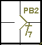
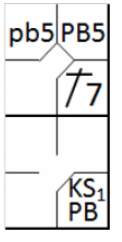

action { batter -> 2B9 }
/* The next batter reaches first base on a 'base on ball' */
action { batter -> BB }
/* The two runners advance on a 'pass ball' */
action { runner1 -> pb , runner2 -> PB }

A passed ball is a statistic charged against a catcher whose action has caused a runner or runners to advance [OBR 9.13].
The official scorer shall charge a catcher with […] a passed ball when the catcher fails to hold or to control a legally pitched ball that should have been held or controlled with ordinary effort, thereby permitting a runner or runners to advance [OBR 9.13(b)].
The abbreviation to be used in the event of an advance on a passed ball is “PB” followed by the batting order number of the player who is at bat at the time of the passed ball.
Example 49: In the event that more than one runner advances, the abbreviation “PB” (upper case) is used for the lead runner and “pb” (lower case) for subsequent runners.
| WBSC | Translation in the scoring tool | Tool |
|---|---|---|
|
|
/* The first batter hits a double to right field */ action { batter -> 2B9 } /* The next batter reaches first base on a 'base on ball' */ action { batter -> BB } /* The two runners advance on a 'pass ball' */ action { runner1 -> pb , runner2 -> PB } |
|
EXCEPTION: As in the case of wild pitches, the abbreviation “PB” (upper case) along with “K”, plus the pitcher’s strikeout number, is used for the batter, should he reach first base when the catcher fails to catch the third strike. The abbreviation “pb” (lower case) is used for the runners. All other comments made for wild pitches apply also to passed balls.
“Ordinary effort” for the catcher means that he should be able to catch and hold the pitched ball in the position delimited by the arc he can make with his glove, in the squatting position as he waits for the ball.
In the Example 50: , the runner reaches second after the ball pitched to the fifth batter is missed.
| WBSC | Translation in the scoring tool | Tool |
|---|---|---|

|
/* The first batter hits a hit in left field */ action { batter -> 1B7 } /* The runner takes advantage of a 'pass ball' to gain a base ball' */ action { runner1 -> PB } |
 |
Example 51:
As the game continues the same runner takes advantage of a further passed ball to advance to third base, and at
the same time the batter reaches first base safely.
For this latter phase the abbreviation “PB” (upper case) is recorded in the first base box, while “pb” (lower case)
is used to signal the runner’s arrival on third base.
| WBSC | Translation in the scoring tool | Tool |
|---|---|---|
|
 |
/* The first batter hits a hit in left field */ action { batter -> 1B7 } /* The runner takes advantage of a 'pass ball' to gain a base ball' */ action { runner1 -> PB } /* Third strike released on a pass ball, the batter-runner advances to first base, the runner advances */ action { batter -> KSPB , runner2 -> pb } |

|